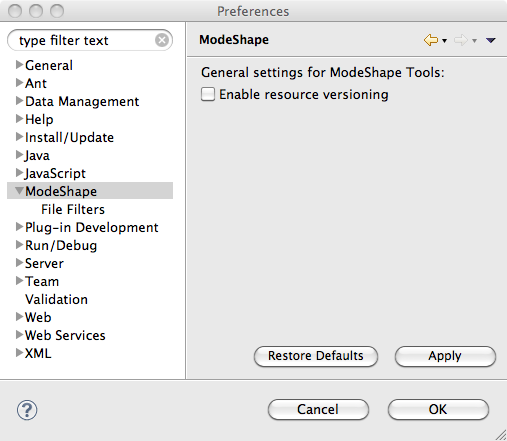
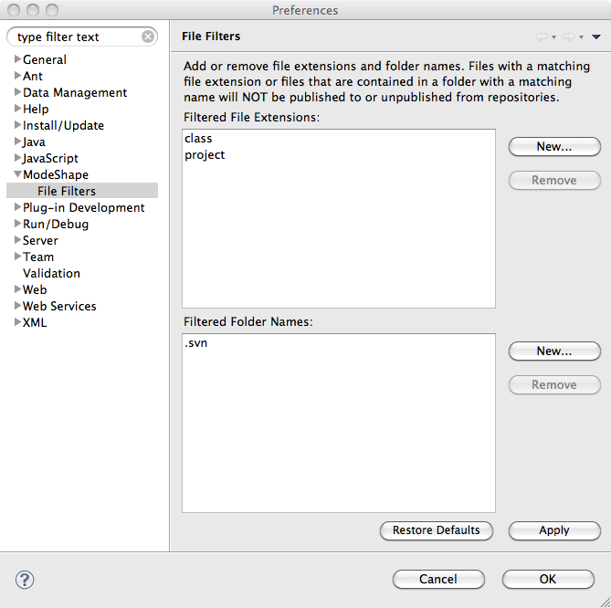
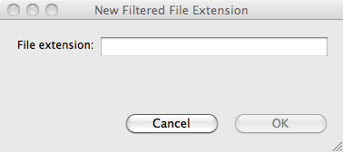
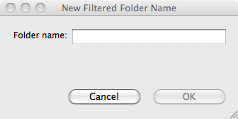

The ModeShape Preference Pages provide settings that allow you to personalize how ModeShape Tools' publishing operations are done. A publishing operation occurs when selected files in your local workspace are either uploaded (published) or deleted (unpublished) to/from a specific ModeShape repository workspace. Here's a list of the preference pages:
The General Settings Preference Page currently only has a setting to control if published resources should be versioned by the ModeShape server. This versioning preference is used by the Publishing Operations Dialog.
Here is what the ModeShape General Settings Preference Page looks like:
The File and Folder Filters Preference Page is where you identify the file extensions and the folder names you do not want involved in your publishing operations.
Here is what the File and Folder Filters Preference Page looks like:
The Filtered File Extensions preference provides a way to construct a list of file extensions. If a file has an extension
that matches one of these file extensions it will not be involved in either a publishing or unpublishing operation. To add a file
extension (ex., txt, jpg, class) simply click on the New... button to display the following dialog:

The Filtered Folder Names preference provides a way to construct a list of folder names. If a file is contained in a
folder, or has an ancestor folder, with a name that matches one of these folder names it will not be involved in
either a publishing or unpublishing operation. To add a folder name simply click on the New... button to display the
following dialog:
